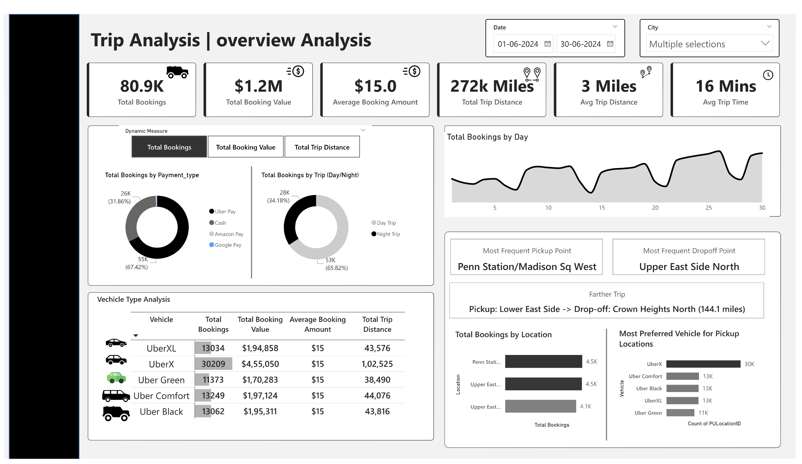

Junior Data Scientist
Data Scientist with a strong foundation in machine learning, NLP, and data analysis. Passionate about leveraging data to build innovative solutions and drive actionable insights.
Data Scientist with a strong foundation in machine learning, NLP, and data analysis. Passionate about leveraging data to build innovative solutions and drive actionable insights.

I'm a Data Scientist with a strong foundation in machine learning, NLP, and data analysis. I graduated with a B.Tech in Computer Science and further trained in data science. I enjoy uncovering patterns in data to create innovative solutions. With hands-on experience in Python, machine learning, deep learning, and generative AI, I'm passionate about solving real-world problems and turning data into actionable insights.
I'm also excited to explore new topics in the data science field and love reading books to stay updated.
B.Tech in Computer Science
1.5+ years
10+ Completed
5 Achieved
An intelligent web application that lets you upload academic PDFs (research papers, whitepapers, etc.) and interact with them using natural language. You can ask questions about the content and get summaries — powered by OpenAI, LangChain, and FAISS.
An advanced Natural Language Processing project that predicts the next word in a sequence using deep learning. Built with TensorFlow, this model learns from large text corpora to understand context and generate accurate predictions. The system uses sophisticated NLP techniques for text preprocessing and implements state-of-the-art neural network architectures for sequence prediction.

Interactive dashboard for Uber Data using PowerBI, DAX Functions, Dashboard.
A sophisticated NLP project that analyzes and determines the semantic similarity between pairs of questions from Quora. The system uses advanced machine learning techniques to identify duplicate or similar questions, helping to improve content quality and user experience. The project involves text preprocessing, feature engineering, and implementing deep learning models to accurately predict question similarity scores.